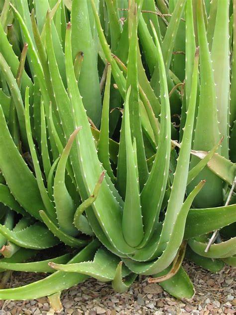

Latthe Education Society's Acharya Deshabhushan Ayurvedic Medical College And Hospital Bedkihal-Shamanewadi, 591214
Department of Dravyaguna Vigyana

Basonym of Drug
Kumari
Main Synonym
Gruhakanya
Ghritakumarika
Kanya
Regional Name
Bengali: Ghrutkumari
Gujarati: Kuvarpathu
Hindi: Gheekunvar, Gavarpatha
Kannada: Lolisara
Tamil: Katalai
Telugu: Kalabanda
English: Aloe Vera
Botanical Name
Aloe barbadensis
Family
Liliaceae
Classification (Gana)
Bhavprakash Nighantu: Guduchyadi Varga
Kaiydeva Nighantu: Aushadhi Varga
Raj Nighantu: Parpatadi Varga
External Morphology
A perennial small shrub
Useful Parts
Stem (modified leaves)
Important Phytoconstituent
Aloenin
Aloctin
Aloe-emodine
Glycoside
Chysophanol
Alocutin
Barbaloin
Rasa Panchak
Rasa: Tikta
Guna: Guru, Snigdha, Pichhila
Virya: Shita
Vipaka: Katu
Action
Kaphavatahara
Therapeutic Indication
Bhedana (drastic purgative)
Vrushya (aphrodisiac)
Brumhana (bulk promoting)
Chakshushya (good for eyes)
Pleehagna (treat splenomegaly)
Therapeutic Uses
Kamla - Fresh juice of Kumari is beneficial in jaundice.
Vibandh - Fresh juice/pulp taken in the morning on an empty stomach is beneficial for constipation.
Dagdha Vrana - Aloe vera juice is applied on burns immediately for soothing and healing.
Dose
Juice: 10-20 ml
Aqueous Extract: 125-250 mg
Formulations
Kumari Ghan
Kumari Asava
Rajahpravartini Vati
Kumari Taila
Adverse Effect
Not Known
Remedial Measure
Not required